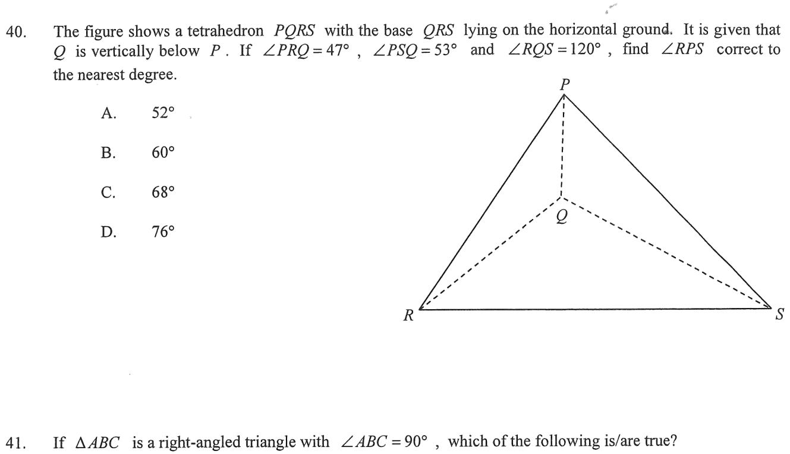

Circle ABCDETangent TAChords / pointsHighlighted angleUnknown $x=\angle ADB$
Step 1 — tangent–chord (alternate segment) angle
HKDSE 2019 · Paper 2 · Q39
Tangent, Chords & Angles in a Circle
In the figure, $TA$ is the tangent to the circle $ABCDE$ at the point $A$.
If $\angle BAD = 64^\circ$, $\angle EAT = 38^\circ$ and $\angle DCE = 22^\circ$, then $\angle ADB =$
A. $52^\circ$ B. $56^\circ$ C. $60^\circ$ D. $68^\circ$

Figure (original exam diagram)
Step 1 · Tangent–chord angle at A
Tangent-Chord Angle (Alternate Segment Theorem)\(\angle(\text{tangent},\ \text{chord})=\angle\ \text{in the alternate segment}\)\(TA\) is tangent at \(A\) and \(AB\) is a chord, so \(\angle ABE=\angle EAT=38^{\circ}\).
$TA$ is a tangent at $A$ and $AB$ is a chord, so the angle between the tangent and the chord equals the angle in the alternate segment:
💡 Exam tip: The key is to "travel" the angle from $A$ (tangent) to $B$ using the alternate segment theorem, then combine with the same-segment angle at $B$ before using the triangle sum in $\triangle ABD$.
Question. \(TA\) is a tangent to a circle at \(A\), and \(E\) lies inside \(\angle ABD\) with \(B\), \(C\), \(D\), \(E\) on the circle. Given \(\angle EAT=44^{\circ}\), \(\angle DCE=25^{\circ}\) and \(\angle BAD=70^{\circ}\), find \(\angle ADB\).